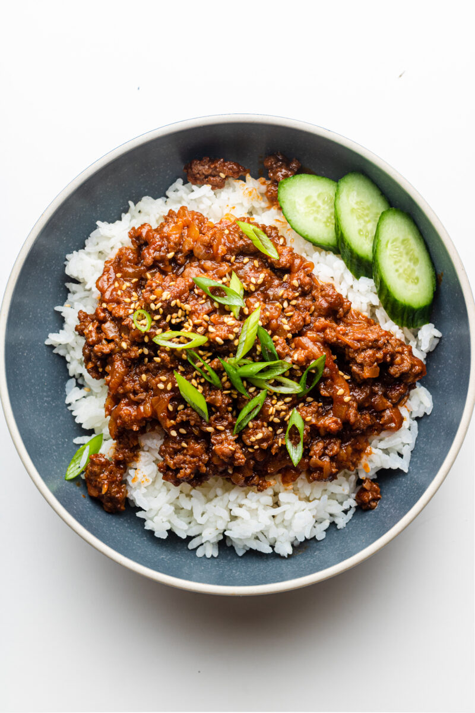

Beef Gochujang

Looking for a delicious, quick, and easy weeknight dinner?
These Korean Gochujang Beef Bowls are perfect for busy
evenings! Packed with savory, spicy, and slightly sweet
flavors, this dish is sure to become a family favorite.
Plus, it’s ready in under 30 minutes, making it a
convenient choice for those busy days.
Ingredients:
1.5 tablespoon minced garlic
1 tablespooon lemon juice
1/2 teaspoon garlic powder
2 tablspoon milk or water
Steps:
- Make the sriracha mayo by mixing up all the ingredients for
he sauce.
- Rins rice in a mesh strainer under cold water for 2 minutes
, then combine with 450g of water and bring to a boil. Once
boiling reduce heat to low, cover, and let cook for 15 minutes.
Remove from heat, keep covered, and let sit another 10 minutes
to cook rice.
- Make the beef marinade by combining sesame oil, minced garlic,
brown sugar, soy sauce and gochujang. Cook the lean beef and
add in the marinade once it's 50% cooked through. Toss in
chopped green onions and let is simmer for 5 minutes or until
beef is fully cooked.
- Assemble 5 bowls with rice, beef, and top with the homemade
sriracha mayo and sesame seeds.
Home